Rotas Ativas
9
Contas, drive, biblioteca, jobs, IA, metadata, regras e admin.
Esta pagina consolida a arquitetura navegavel atual do produto para ser importada ao Figma. O foco e mostrar o estado real do app hoje: telas principais, profundidades relevantes e o catalogo de modais, drawers e confirmacoes que atravessam os fluxos operacionais.
Cada card abaixo representa uma entrada primaria do frontend e as superficies secundarias acopladas a ela. Isso facilita transformar o board do Figma em mapa navegacional.
Capturas reais do frontend atual. Elas funcionam como base visual para frames no Figma e ajudam a preservar a hierarquia de informacao e o estilo operacional do produto.
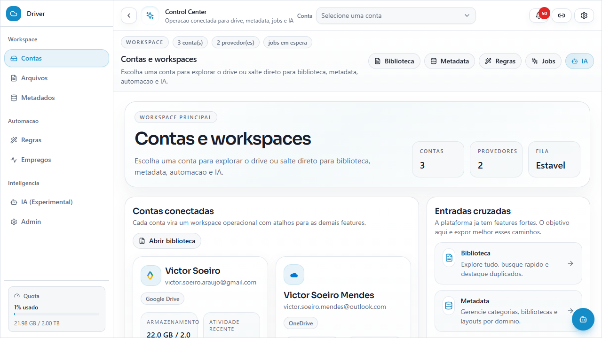
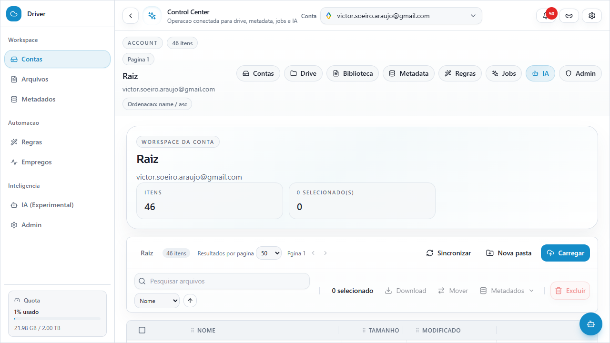
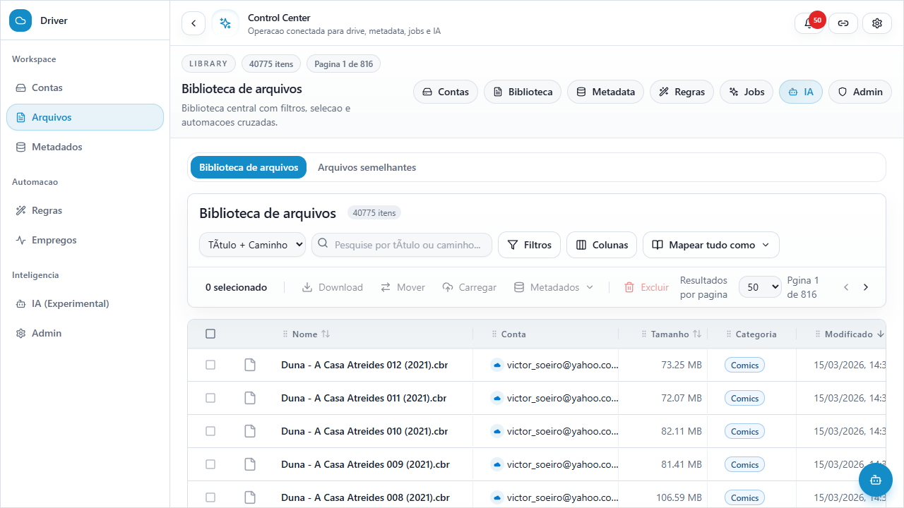
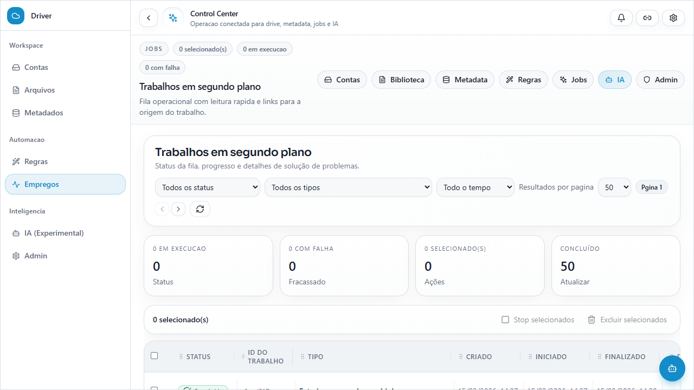
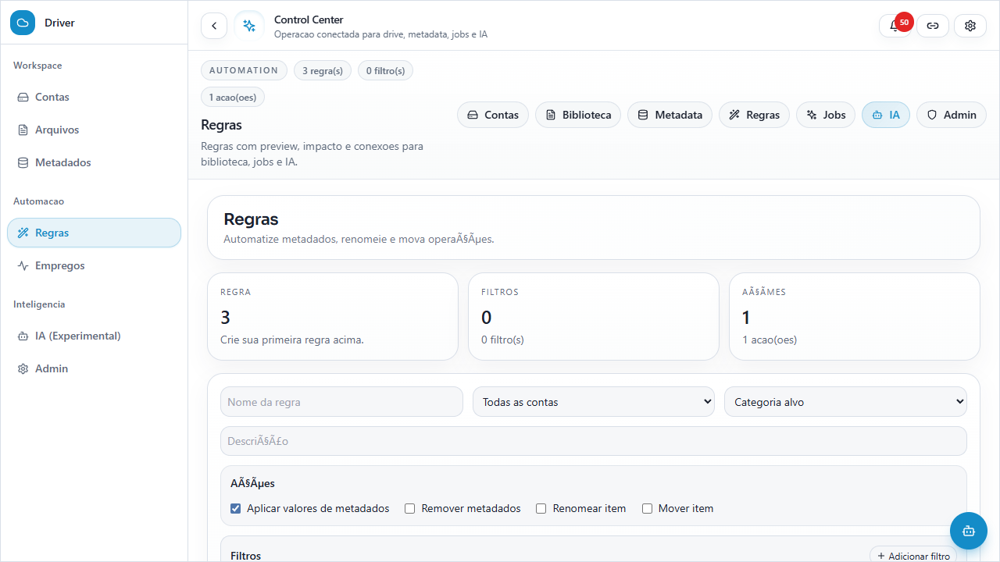
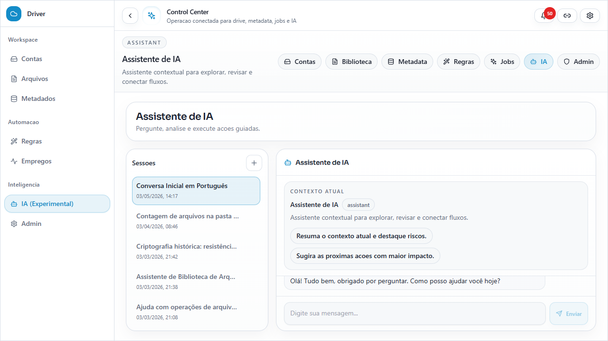

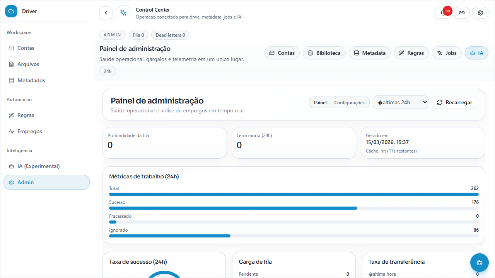
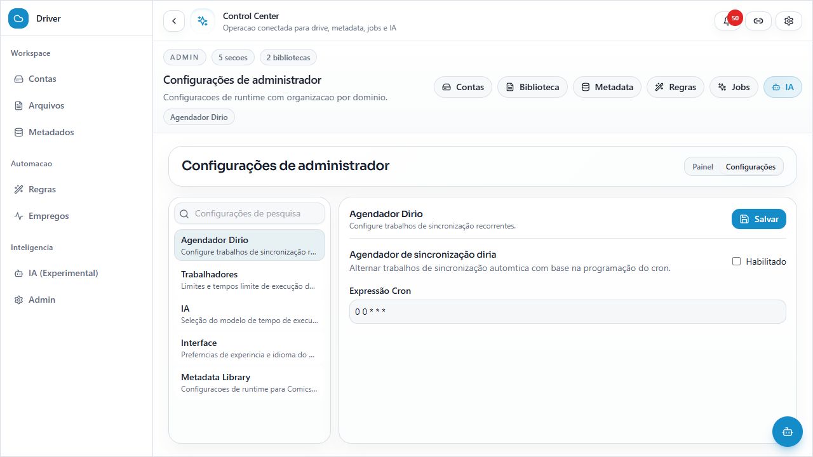
Catalogo das superfices temporarias do frontend. Onde nao havia captura pronta no repositorio, o board registra o overlay como componente navegacional para preservar o mapeamento no Figma.
Estados menores que ajudam a separar quais frames tambem deveriam existir no arquivo do Figma como referencia responsiva.
Hub inicial reduzido.
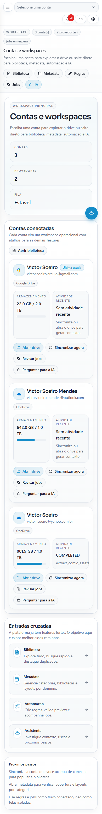
Biblioteca e toolbar compactadas.
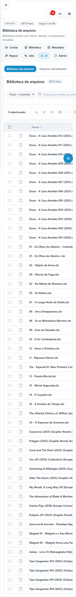
Fila e estados em coluna unica.
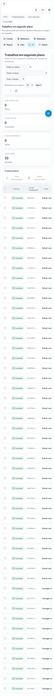
Configuracoes administrativas em painel compacto.
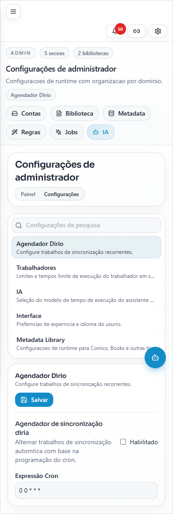
O inventario privilegia as telas reais e mapeia os overlays mais importantes como componentes. Dialogos genericos e estados de submissao muito especificos nao ganharam screenshot propria, mas foram listados no catalogo de overlays para nao se perderem no board.
Se quiser, o proximo passo natural e abrir um segundo board so para estados internos de modais pesados, especialmente MetadataModal, BatchMetadataModal e MetadataLayoutBuilderModal.